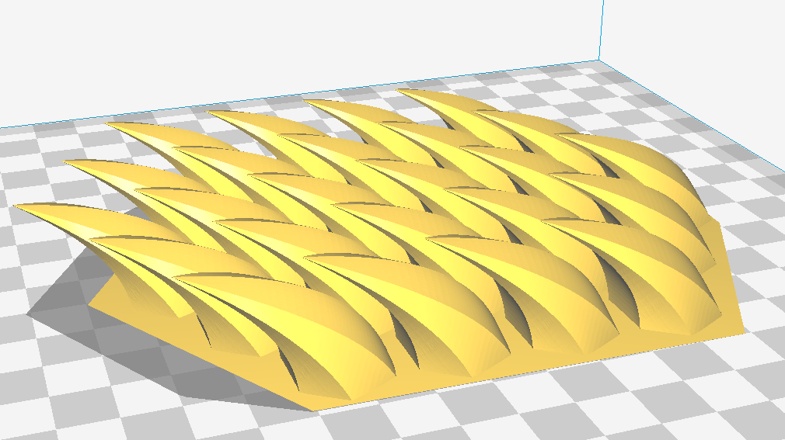
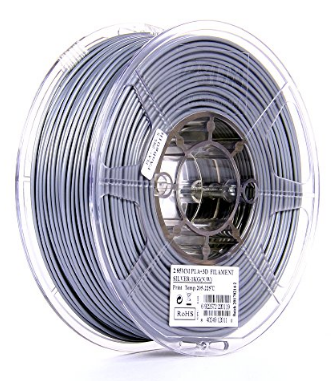
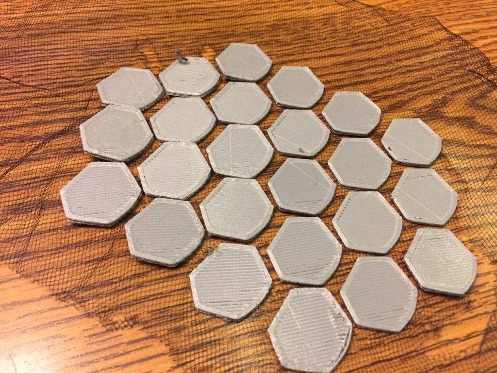
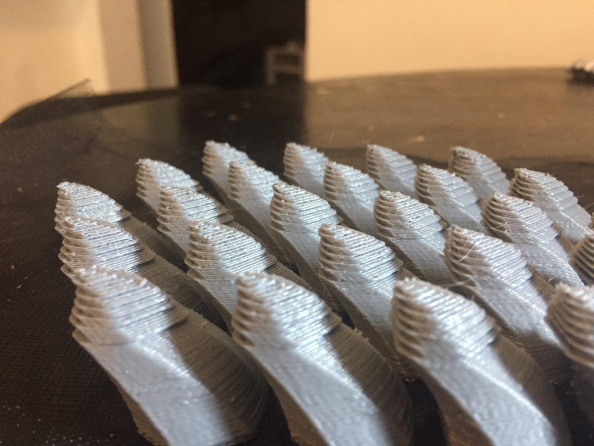

3D Printing on Fabric - Dragon Scales
In our upcoming production of Macbeth at work, one of the many spooky ingredients that the Three Witches drop into their wondrous cauldron is "scale of dragon." To that end, I'm helping our props department out by printing some dragon scales onto some toule. The design is essentially some raised, horned scales repeated in a hexagonal pattern.

The print is in silver eSUN PLA+, which strikes a nice balance between the darker, dull tone of most grey filaments, and the super shiny "metallic" filaments. eSUN PLA+ has become my defacto standard in the past couple months, after I used 4kg or so to complete a project printing portable

So far, I've had three failed prints with this file and technique. The first was my own fault: after pausing the print between the second and third layers to insert to toule, I hit "Stop Print" instead of "Resume Print." Arg. The second and third failures, though, are a mystery. They appear to have stopped extruding following printing the bottom layers before starting on the infill and walls. I don't know why exactly this happened, as I started both prints late at night after work before heading to bed. But both times, I came out in the morning to find the print head at the final Z height I would have expected had the print completed... but with only a small bottom layer of rectangles trapping the fabric.

I'm currently printing the pattern again, re-sliced. Here's hoping!
Update after printing: close, but no cigar.
Re-slicing the file alleviated the "no extrusion after the bottom layers" problem, so I can only assume it was some odd setting in Cura that was to blame. I'd been trying out a "pause at given height" plug-in script, but a little more googling has lead to believe that this not usable in its current form with the Duplicator i3. Perhaps that was the cause.

This time, the error was my fault. It seems that one of the binder clips holding the toule to the heated bed was contacting the frame of the printer at one end of its Y travel. This only turned out to be an issue for the top %30 of the print, when the tip of the "frontmost" scale leaned far enough in the Y+ direction to cause the binder clip to contact the frame. Thus, everything above this level shows layer-shifts every two or three layers as the clip hits the frame and causes the y-stepper to skip a step.
Back again later with smaller binder clips!